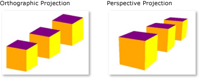

Обзор трехмерной графики
Функциональные возможности трехмерной (3D) графики в Windows Presentation Foundation (WPF) позволяют разработчикам рисовать, преобразовывать и анимировать трехмерную графику как в разметке, так и в процедурном коде. Разработчики могут сочетать двухмерную графику с трехмерной для создания многофункциональных элементов управления, предоставления сложных визуальных представлений данных или повышения удобства работы с интерфейсом приложения. Поддержка трехмерной графики в WPF не предполагает предоставления полнофункциональной платформы для разработки игр. В этом разделе содержатся общие сведения о функциональных возможностях трехмерной графики в графической системе WPF.
Трехмерное содержимое в двумерном контейнере
Графическое 3D-содержимое в WPF инкапсулировано в элементе Viewport3D, который может входить в структуру двумерного элемента. Графическая система рассматривает Viewport3D как двумерный визуальный элемент, подобный многим другим в WPF. Viewport3D функционирует как окно — окно просмотра трехмерной сцены. Говоря точнее, это поверхность, на которую проецируется 3D-сцена.
В традиционном 2D-приложении Viewport3D можно использовать так же, как и любой другой контейнерный элемент, например Grid или Canvas. Несмотря на то, что можно использовать Viewport3D с другими графическими 2D-объектами в том же графе сцены, нельзя сочетать 2D и 3D объекты в рамках Viewport3D. В этом разделе основное внимание уделяется отрисовке 3D-графики внутри Viewport3D.
Координаты трехмерного пространства
Система координат WPF для 2D-графики начинается в левом верхнем углу области отрисовки (обычно областью отрисовки является экран). В 2D-системе положительные значения оси X откладываются слева направо, а оси Y — сверху вниз. Однако, в системе 3D-координат начало располагается в центре отрисовываемой области, положительные значения оси X откладываются слева направо, оси Y — снизу вверх, а оси Z — из центра к наблюдателю.

Представления традиционных двумерных и трехмерных систем координат
Пространство, определяемое этими осями, является стационарной системой отсчета координат для 3D-объектов в WPF. При построении моделей в этом пространстве и создании источников света и камер для их отображения необходимо отличать стационарную систему отсчета координат ("мировую систему координат") от локальной системы отсчета, которая создается для каждой модели при применении к ней преобразований. Помните, что в зависимости от освещения и настроек камеры объекты в мировой системе координат могут выглядеть различным образом или быть полностью невидимыми. При этом положение камеры не изменяет расположения объектов в мировой системе координат.
Камеры и проекции
Разработчики, работающие с двумерной графикой, привыкли к размещению графических примитивов на двумерном экране. При создании 3D-сцены важно помнить, что фактически создается 2D-представление 3D-объектов. Поскольку 3D-сцена выглядит по-разному в зависимости от точки наблюдения, необходимо указать эту точку наблюдения. Это позволяет сделать класс Camera.
Другой способ понимания того, как представляется 3D-сцена на 2D-поверхности — это описание сцены как проекции на поверхность просмотра. ProjectionCamera позволяет указать различные проекции и их свойства для изменения того, как наблюдатель видит 3D-модели. Объект PerspectiveCamera указывает проекцию сцены в перспективе. Другими словами, PerspectiveCamera предоставляет точку схождения перспективы. Можно указать положение камеры в пространстве координат сцены, направление, поле зрения камеры и вектор, определяющий направление "вверх" в сцене. На следующей схеме показана PerspectiveCamera в проекции.
Свойства NearPlaneDistance и FarPlaneDistance объекта ProjectionCamera ограничивают диапазон проекции камеры. Поскольку камеры могут быть расположены в любом месте сцены, фактически можно расположить камеру внутри модели или очень близко от нее, затрудняя её обзор. NearPlaneDistance позволяет указать минимальное расстояние от камеры, объекты ближе которого не будут нарисованы. И наоборот, FarPlaneDistance позволяет задать расстояние от камеры, за которым объекты не будут нарисованы, что гарантирует, что объекты, расположенные слишком далеко, чтобы их можно было раглядеть, не будут включены в сцену.
Позиция камеры
OrthographicCamera указывает ортогональную проекцию 3D-модели на двумерную визуальную поверхность. Подобно другим камерам, она указывает позицию, направление просмотра и направление "вверх". В отличие от PerspectiveCamera, при этом OrthographicCamera описывает проекцию, которая не включает ракурс перспективы. Другими словами, OrthographicCamera описывает призму, стороны которой параллельны, а не сходятся в точке камеры. На следующем рисунке показана одна и та же модель, отображенная с использованием PerspectiveCamera и OrthographicCamera.

Перспективная и ортогональная проекции
В следующем коде показано несколько обычных параметров камеры.
// Defines the camera used to view the 3D object. In order to view the 3D object,
// the camera must be positioned and pointed such that the object is within view
// of the camera.
PerspectiveCamera myPCamera = new PerspectiveCamera();
// Specify where in the 3D scene the camera is.
myPCamera.Position = new Point3D(0, 0, 2);
// Specify the direction that the camera is pointing.
myPCamera.LookDirection = new Vector3D(0, 0, -1);
// Define camera's horizontal field of view in degrees.
myPCamera.FieldOfView = 60;
// Asign the camera to the viewport
myViewport3D.Camera = myPCamera;
Примитивы модели и сетки
Model3D — абстрактный базовый класс, представляющий универсальный 3D-объект. Для создания 3D-сцены необходимо несколько объектов, составляющих граф сцены и являющихся производными от Model3D. В настоящее время WPF поддерживает моделирование геометрических объектов с помощью GeometryModel3D. Свойство Geometry этой модели принимает примитив сетки.
Начните построение модели с создания примитива или сетки. 3D-примитив представляет собой набор вершин, образующих одну 3D-сущность. Большинство 3D-систем предоставляют примитивы, смоделированные на основе простейшей замкнутой фигуры: треугольника, определенного тремя вершинами. Поскольку три точки треугольника лежат в одной плоскости, можно добавлять треугольники для моделирования более сложных фигур, называемых сетками.
3D-система WPF предоставляет класс MeshGeometry3D, позволяющий определить любую геометрическую форму; предопределенные 3D-примитивы, такие как сферы или кубические формы, на текущий момент не поддерживаются. Начните создание MeshGeometry3D путем определения списка вершин треугольников в качестве его свойства Positions. Каждая вершина задается как Point3D. (В XAML это свойство указывается в виде списка чисел, сгруппированных тройками и представляющих координаты каждой вершины.) В зависимости от геометрического объекта сетка может состоять из множества треугольников, некоторые из которых совместно используют общие углы (вершины). Чтобы нарисовать сетку правильно, приложению WPF необходимы сведения о том, какие вершины треугольников являются общими. Эта информация, указывается как список индексов треугольников в свойстве TriangleIndices. Этот список определяет порядок, в котором точки, указанные в Positions, будут определять треугольник.
<GeometryModel3D>
<GeometryModel3D.Geometry>
<MeshGeometry3D
Positions="-1 -1 0 1 -1 0 -1 1 0 1 1 0"
Normals="0 0 1 0 0 1 0 0 1 0 0 1"
TextureCoordinates="0 1 1 1 0 0 1 0 "
TriangleIndices="0 1 2 1 3 2" />
</GeometryModel3D.Geometry>
<GeometryModel3D.Material>
<DiffuseMaterial>
<DiffuseMaterial.Brush>
<SolidColorBrush Color="Cyan" Opacity="0.3"/>
</DiffuseMaterial.Brush>
</DiffuseMaterial>
</GeometryModel3D.Material>
<!-- Translate the plane. -->
<GeometryModel3D.Transform>
<TranslateTransform3D
OffsetX="2" OffsetY="0" OffsetZ="-1" >
</TranslateTransform3D>
</GeometryModel3D.Transform>
</GeometryModel3D>
В приведенном выше примере список Positions задает восемь вершин для определения сетки кубической формы. Свойство TriangleIndices указывает список двенадцати групп по три индекса. Каждое число в списке определяет смещение в списке Positions. Например, первыми тремя вершинами в Positions являются (1,1,0), (0,1,0) и (0,0,0). Первые три индекса, определяемые TriangleIndices: 0, 2 и 1, которые соответствует первому, третьему и второму пунктам в Positions. В результате первый треугольник, формирующий модель куба, будет составлен из вершин (1, 1, 0), (0, 1, 0) и (0, 0, 0), а оставшиеся одиннадцать треугольников будут определяться аналогичным образом.
Можно продолжить определение модели путем указания значений для свойств Normals и TextureCoordinates. Для отображения поверхности модели графической системе требуются данные о том, какое направление поверхности является лицевым для любого данного треугольника. Система использует эти сведения для вычислений освещения модели: поверхности, обращенные к источнику освещения, отображаются ярче, чем поверхности, расположенные под углом к освещению. Хотя приложение WPF может определить векторы нормали по умолчанию, используя координаты позиции, можно также задавать различные векторы нормали для аппроксимации вида кривых поверхностей.
Свойство TextureCoordinates указывает коллекцию Point, сообщающую графической системе, как сопоставить координаты текстуры вершинам сетки. TextureCoordinates указываются как значение от 0 до 1 включительно. Как и в свойстве Normals, графическая система может вычислить координаты текстуры по умолчанию, но вы можете установить различные координаты текстуры для управления отображением текстуры, например, содержащей часть повторяющегося узора. Дополнительные сведения о координатах текстуры можно найти в последующих разделах или в пакете Managed Direct3D SDK.
В следующем примере показано создание одной грани модели куба в процедурном коде. Обратите внимание, что можно нарисовать весь куб как один объект GeometryModel3D; в этом примере грань куба отображается как отдельная модель для того, чтобы далее применить отдельные текстуры для каждой грани.
MeshGeometry3D side1Plane = new MeshGeometry3D();
side1Plane.Positions.Add(new Point3D(-0.5, -0.5, -0.5));
side1Plane.Positions.Add(new Point3D(-0.5, 0.5, -0.5));
side1Plane.Positions.Add(new Point3D(0.5, 0.5, -0.5));
side1Plane.Positions.Add(new Point3D(0.5, 0.5, -0.5));
side1Plane.Positions.Add(new Point3D(0.5, -0.5, -0.5));
side1Plane.Positions.Add(new Point3D(-0.5, -0.5, -0.5));
side1Plane.TriangleIndices.Add(0);
side1Plane.TriangleIndices.Add(1);
side1Plane.TriangleIndices.Add(2);
side1Plane.TriangleIndices.Add(3);
side1Plane.TriangleIndices.Add(4);
side1Plane.TriangleIndices.Add(5);
side1Plane.Normals.Add(new Vector3D(0, 0, -1));
side1Plane.Normals.Add(new Vector3D(0, 0, -1));
side1Plane.Normals.Add(new Vector3D(0, 0, -1));
side1Plane.Normals.Add(new Vector3D(0, 0, -1));
side1Plane.Normals.Add(new Vector3D(0, 0, -1));
side1Plane.Normals.Add(new Vector3D(0, 0, -1));
side1Plane.TextureCoordinates.Add(new Point(1, 0));
side1Plane.TextureCoordinates.Add(new Point(1, 1));
side1Plane.TextureCoordinates.Add(new Point(0, 1));
side1Plane.TextureCoordinates.Add(new Point(0, 1));
side1Plane.TextureCoordinates.Add(new Point(0, 0));
side1Plane.TextureCoordinates.Add(new Point(1, 0));
Применение материалов к модели
Чтобы сетка выглядела как объект в трехмерном пространстве, к ней необходимо применить текстуру, которая покрывает поверхность, определенную ее вершинами и треугольниками. В этом случае можно осветить эту поверхность и создать ее проекцию с помощью камеры. В двумерной графике для применения цветов, шаблонов, градиентов или другого визуального содержимого к участкам экрана используется класс Brush. Однако, внешний вид 3D-объектов является функцией модели освещения, а не только примененного к ним цвета или узора. Реальные объекты отражают свет неодинаково, в зависимости от качества поверхностей: гладкие и глянцевые поверхности выглядят иначе, чем неровные и матовые, также одни объекты поглощают свет, в то время как другие — отражают. К 3D-объектам можно применить те же кисти, что и к 2D-объектам, но применить их напрямую невозможно.
Для определения характеристик поверхности модели WPF использует абстрактный класс Material. Конкретные подклассы класса Material определяют некоторые характеристики внешнего вида поверхности модели, и каждый из них предоставляет свойство Brush, которому можно присвоить значение SolidColorBrush, TileBrush или VisualBrush.
DiffuseMaterial указывает, что кисть будет применена к модели, так, будто она была освещена рассеянным светом. Использование класса DiffuseMaterial больше всего напоминает применение кистей непосредственно в 2D-моделях; поверхности модели не отражают свет, как блестящие поверхности.
SpecularMaterial указывает, что кисть будет применена к модели, как если бы поверхность модели была твердой или блестящей, способной отражать блики. Можно задать степень гладкости или «глянца» текстуры, указав значение для свойства SpecularPower.
EmissiveMaterial позволяет указать, что текстура будет применяться, как если бы модель излучала свет, соответствующий цвету кисти. Это не делает модель светящейся; однако это иначе влияет на затенение, чем если бы текстура была создана с помощью класса DiffuseMaterial или SpecularMaterial.
Для повышения производительности противоположные поверхности объекта GeometryModel3D (грани, которые невидимы, поскольку они находятся на противоположной стороне модели относительно камеры) удаляются из сцены. Чтобы указать Material для применения к противоположной поверхности модели, установите свойство BackMaterial.
Для достижения некоторых свойств поверхности, таких как свечение или эффект отражения, можно последовательно применить к модели несколько различных кистей. Можно применять и повторно использовать несколько материалов с помощью класса MaterialGroup. Дочерние элементы класса MaterialGroup применяются от первого к последнему в нескольких проходах отрисовки.
В следующих примерах кода показано применение сплошного цвета и рисования с помощью кистей к 3D-модели.
<GeometryModel3D.Material>
<DiffuseMaterial>
<DiffuseMaterial.Brush>
<SolidColorBrush Color="Cyan" Opacity="0.3"/>
</DiffuseMaterial.Brush>
</DiffuseMaterial>
</GeometryModel3D.Material>
<DrawingBrush x:Key="patternBrush" Viewport="0,0,0.1,0.1" TileMode="Tile">
<DrawingBrush.Drawing>
<DrawingGroup>
<DrawingGroup.Children>
<GeometryDrawing Geometry="M0,0.1 L0.1,0 1,0.9, 0.9,1z"
Brush="Gray" />
<GeometryDrawing Geometry="M0.9,0 L1,0.1 0.1,1 0,0.9z"
Brush="Gray" />
<GeometryDrawing Geometry="M0.25,0.25 L0.5,0.125 0.75,0.25 0.5,0.5z"
Brush="#FFFF00" />
<GeometryDrawing Geometry="M0.25,0.75 L0.5,0.875 0.75,0.75 0.5,0.5z"
Brush="Black" />
<GeometryDrawing Geometry="M0.25,0.75 L0.125,0.5 0.25,0.25 0.5,0.5z"
Brush="#FF0000" />
<GeometryDrawing Geometry="M0.75,0.25 L0.875,0.5 0.75,0.75 0.5,0.5z"
Brush="MediumBlue" />
</DrawingGroup.Children>
</DrawingGroup>
</DrawingBrush.Drawing>
</DrawingBrush>
DiffuseMaterial side5Material = new DiffuseMaterial((Brush)Application.Current.Resources["patternBrush"]);
Освещение сцены
Источники света в 3D-графике выполняют ту же роль, что и реальные источники света: они делают поверхности видимыми. Более того, источники света определяют, какая часть сцены будет включена в проекцию. Объекты источников света в приложении WPF создают различные эффекты света и тени. Они смоделированы на основе поведения различных реальных источников света. Сцена должна включать как минимум один источник света, иначе модели будут невидимыми.
Указанные ниже источники света являются производными от базового класса Light:
AmbientLight: Предоставляет рассеянное освещение, при котором все объекты освещаются одинаково, независимо от их расположения или ориентации.
DirectionalLight: Создает освещение, аналогичное удаленному источнику света. Направленные источники света имеют свойство Direction, указанное как объект Vector3D, но без заданного местоположения.
PointLight: Создает освещение, аналогичное точечному источнику света. Источники света PointLights занимают определенное положение и испускают свет из этого положения. Объекты на сцене освещаются в зависимости от их положения и расстояния относительно источника света. PointLightBase предоставляет свойство Range, которое определяет расстояние, далее которого модели не будут освещены светом. Класс PointLight также предоставляет свойства затухания, определяющие интенсивность ослабления источника света в зависимости от расстояния. Можно указать константу, линейную или квадратичную интерполяцию затухания источника света.
SpotLight: Наследует от PointLight. Источники света Spotlight освещают сцену подобно точечным источникам света и также имеют расположение и направление. Они проецируют свет в конусообразную область, заданную свойствами InnerConeAngle и OuterConeAngle (в градусах).
За освещение отвечают объекты Model3D, поэтому можно преобразовывать и анимировать свойства источников света, включая положение, цвет, направление и диапазон.
<ModelVisual3D.Content>
<AmbientLight Color="#333333" />
</ModelVisual3D.Content>
DirectionalLight myDirLight = new DirectionalLight();
myDirLight.Color = Colors.White;
myDirLight.Direction = new Vector3D(-3, -4, -5);
modelGroup.Children.Add(myDirLight);
Преобразование моделей
При создании моделей в сцене им задается определенное местоположение. Для поворота моделей, изменения их размера или перемещения внутри сцены не следует изменять вершины, определяющие сами модели. Вместо этого, как и в 2D-моделировании, следует применять к моделям преобразования.
Каждый объект модели имеет свойство Transform, с помощью которого можно перемещать модель или изменять ее размер. При применении преобразования все точки модели фактически смещаются с помощью определенного вектора или значения, заданного преобразованием. Другими словами, выполняется преобразование координатного пространства, в котором определена модель ("пространство модели"), при этом значения, составляющие геометрию модели в системе координат всей сцены ("мировое пространство"), не изменяются.
Дополнительные сведения о преобразовании моделей см. в разделе Общие сведения о трехмерных преобразованиях.
Анимация моделей
Реализация 3D-модели WPF в приложении участвует в той же системе анимации и времени, что и 2D-графика. Другими словами, для анимации трехмерной сцены необходимо анимировать свойства ее моделей. Можно непосредственно анимировать свойства примитивов, но обычно проще анимировать преобразования, изменяющие позицию или внешний вид моделей. Поскольку преобразования можно применить и к Model3DGroup, а также отдельным моделям, возможно применение одного набора анимаций к дочернему элементу Model3DGroup, а другого набора — к группе дочерних объектов. Также можно добиться разнообразных визуальных эффектов, анимируя свойства элементов освещения сцены. Наконец, можно анимировать саму проекцию, изменяя положение камеры или поле зрения. Дополнительные сведения о системе времени и анимации в приложении WPF см. в разделах Общие сведения об эффектах анимации, Общие сведения о Storyboard и Общие сведения об объектах класса Freezable.
Для анимации объекта в приложении WPF создайте временную шкалу, определите анимацию (которая изменяет значение некоторого свойства во времени) и укажите свойство, к которому применяется анимация. Так как все объекты в 3D-сцене являются дочерними элементами Viewport3D, необходимо применить анимацию к свойствам Viewport3D.
Предположим, требуется создать качающуюся на месте модель. Вы можете применить RotateTransform3D к модели и анимировать ее ось вращения от одного вектора к другому. В следующем примере кода демонстрируется применение Vector3DAnimation к свойству Axis преобразования элемента Rotation3D, при условии что RotateTransform3D будет одним из нескольких преобразований, применяемых к модели с TransformGroup.
//Define a rotation
RotateTransform3D myRotateTransform = new RotateTransform3D(new AxisAngleRotation3D(new Vector3D(0, 1, 0), 1));
Vector3DAnimation myVectorAnimation = new Vector3DAnimation(new Vector3D(-1, -1, -1), new Duration(TimeSpan.FromMilliseconds(5000)));
myVectorAnimation.RepeatBehavior = RepeatBehavior.Forever;
myRotateTransform.Rotation.BeginAnimation(AxisAngleRotation3D.AxisProperty, myVectorAnimation);
//Add transformation to the model
cube1TransformGroup.Children.Add(myRotateTransform);
Добавление трехмерного содержимого в окно
Для отображения сцены добавьте модели и источники света в Model3DGroup, затем установите Model3DGroup как Content у ModelVisual3D. Добавьте ModelVisual3D в коллекцию Children элемента Viewport3D. Добавьте камеру во Viewport3D, задав его свойство Camera.
Наконец, добавьте Viewport3D в окно. Когда Viewport3D включен в содержимое элемента макета, такого как Canvas, укажите размер объекта Viewport3D, задав его свойства Height и Width (наследуется от FrameworkElement).
<UserControl x:Class="HostingWpfUserControlInWf.UserControl1"
xmlns="http://schemas.microsoft.com/winfx/2006/xaml/presentation"
xmlns:x="http://schemas.microsoft.com/winfx/2006/xaml"
>
<Grid>
<!-- Place a Label control at the top of the view. -->
<Label
HorizontalAlignment="Center"
TextBlock.TextAlignment="Center"
FontSize="20"
Foreground="Red"
Content="Model: Cone"/>
<!-- Viewport3D is the rendering surface. -->
<Viewport3D Name="myViewport" >
<!-- Add a camera. -->
<Viewport3D.Camera>
<PerspectiveCamera
FarPlaneDistance="20"
LookDirection="0,0,1"
UpDirection="0,1,0"
NearPlaneDistance="1"
Position="0,0,-3"
FieldOfView="45" />
</Viewport3D.Camera>
<!-- Add models. -->
<Viewport3D.Children>
<ModelVisual3D>
<ModelVisual3D.Content>
<Model3DGroup >
<Model3DGroup.Children>
<!-- Lights, MeshGeometry3D and DiffuseMaterial objects are added to the ModelVisual3D. -->
<DirectionalLight Color="#FFFFFFFF" Direction="3,-4,5" />
<!-- Define a red cone. -->
<GeometryModel3D>
<GeometryModel3D.Geometry>
<MeshGeometry3D
Positions="0.293893 -0.5 0.404509 0.475528 -0.5 0.154509 0 0.5 0 0.475528 -0.5 0.154509 0 0.5 0 0 0.5 0 0.475528 -0.5 0.154509 0.475528 -0.5 -0.154509 0 0.5 0 0.475528 -0.5 -0.154509 0 0.5 0 0 0.5 0 0.475528 -0.5 -0.154509 0.293893 -0.5 -0.404509 0 0.5 0 0.293893 -0.5 -0.404509 0 0.5 0 0 0.5 0 0.293893 -0.5 -0.404509 0 -0.5 -0.5 0 0.5 0 0 -0.5 -0.5 0 0.5 0 0 0.5 0 0 -0.5 -0.5 -0.293893 -0.5 -0.404509 0 0.5 0 -0.293893 -0.5 -0.404509 0 0.5 0 0 0.5 0 -0.293893 -0.5 -0.404509 -0.475528 -0.5 -0.154509 0 0.5 0 -0.475528 -0.5 -0.154509 0 0.5 0 0 0.5 0 -0.475528 -0.5 -0.154509 -0.475528 -0.5 0.154509 0 0.5 0 -0.475528 -0.5 0.154509 0 0.5 0 0 0.5 0 -0.475528 -0.5 0.154509 -0.293892 -0.5 0.404509 0 0.5 0 -0.293892 -0.5 0.404509 0 0.5 0 0 0.5 0 -0.293892 -0.5 0.404509 0 -0.5 0.5 0 0.5 0 0 -0.5 0.5 0 0.5 0 0 0.5 0 0 -0.5 0.5 0.293893 -0.5 0.404509 0 0.5 0 0.293893 -0.5 0.404509 0 0.5 0 0 0.5 0 "
Normals="0.7236065,0.4472139,0.5257313 0.2763934,0.4472138,0.8506507 0.5308242,0.4294462,0.7306172 0.2763934,0.4472138,0.8506507 0,0.4294458,0.9030925 0.5308242,0.4294462,0.7306172 0.2763934,0.4472138,0.8506507 -0.2763934,0.4472138,0.8506507 0,0.4294458,0.9030925 -0.2763934,0.4472138,0.8506507 -0.5308242,0.4294462,0.7306172 0,0.4294458,0.9030925 -0.2763934,0.4472138,0.8506507 -0.7236065,0.4472139,0.5257313 -0.5308242,0.4294462,0.7306172 -0.7236065,0.4472139,0.5257313 -0.858892,0.429446,0.279071 -0.5308242,0.4294462,0.7306172 -0.7236065,0.4472139,0.5257313 -0.8944269,0.4472139,0 -0.858892,0.429446,0.279071 -0.8944269,0.4472139,0 -0.858892,0.429446,-0.279071 -0.858892,0.429446,0.279071 -0.8944269,0.4472139,0 -0.7236065,0.4472139,-0.5257313 -0.858892,0.429446,-0.279071 -0.7236065,0.4472139,-0.5257313 -0.5308242,0.4294462,-0.7306172 -0.858892,0.429446,-0.279071 -0.7236065,0.4472139,-0.5257313 -0.2763934,0.4472138,-0.8506507 -0.5308242,0.4294462,-0.7306172 -0.2763934,0.4472138,-0.8506507 0,0.4294458,-0.9030925 -0.5308242,0.4294462,-0.7306172 -0.2763934,0.4472138,-0.8506507 0.2763934,0.4472138,-0.8506507 0,0.4294458,-0.9030925 0.2763934,0.4472138,-0.8506507 0.5308249,0.4294459,-0.7306169 0,0.4294458,-0.9030925 0.2763934,0.4472138,-0.8506507 0.7236068,0.4472141,-0.5257306 0.5308249,0.4294459,-0.7306169 0.7236068,0.4472141,-0.5257306 0.8588922,0.4294461,-0.27907 0.5308249,0.4294459,-0.7306169 0.7236068,0.4472141,-0.5257306 0.8944269,0.4472139,0 0.8588922,0.4294461,-0.27907 0.8944269,0.4472139,0 0.858892,0.429446,0.279071 0.8588922,0.4294461,-0.27907 0.8944269,0.4472139,0 0.7236065,0.4472139,0.5257313 0.858892,0.429446,0.279071 0.7236065,0.4472139,0.5257313 0.5308242,0.4294462,0.7306172 0.858892,0.429446,0.279071 " TriangleIndices="0 1 2 3 4 5 6 7 8 9 10 11 12 13 14 15 16 17 18 19 20 21 22 23 24 25 26 27 28 29 30 31 32 33 34 35 36 37 38 39 40 41 42 43 44 45 46 47 48 49 50 51 52 53 54 55 56 57 58 59 " />
</GeometryModel3D.Geometry>
<GeometryModel3D.Material>
<DiffuseMaterial>
<DiffuseMaterial.Brush>
<SolidColorBrush
Color="Red"
Opacity="1.0"/>
</DiffuseMaterial.Brush>
</DiffuseMaterial>
</GeometryModel3D.Material>
</GeometryModel3D>
</Model3DGroup.Children>
</Model3DGroup>
</ModelVisual3D.Content>
</ModelVisual3D>
</Viewport3D.Children>
</Viewport3D>
</Grid>
</UserControl>